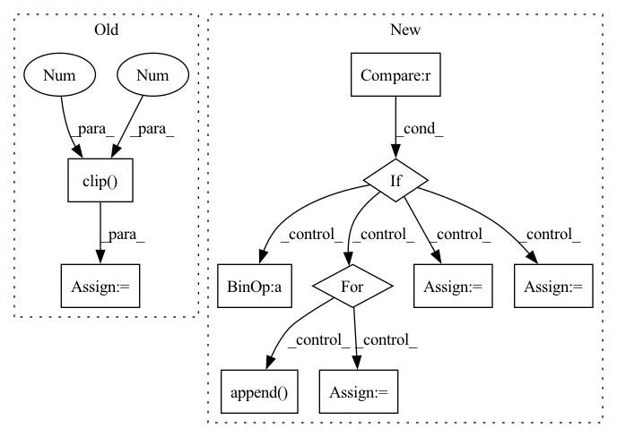

Pattern ID :24369
Before Change
cur_res = inpainted_image[0].permute(1, 2, 0).detach().cpu().numpy()
cur_res = cur_res[0:origin_height, 0:origin_width, :]
cur_res = np.clip( cur_res * 255, 0 , 255 ) .astype("uint8")
cur_res = cv2.cvtColor(cur_res, cv2.COLOR_BGR2RGB)
return cur_res
After Change
return: BGR IMAGE
area = image.shape[1] * image.shape[2]
if area < self.crop_trigger_size[0] * self.crop_trigger_size[1] :
return self._run(image, mask)
print("Trigger crop image")
boxes = boxes_from_mask(mask)
crop_result = []
for box in boxes:
crop_image, crop_box = self._run_box(image, mask, box)
crop_result.append( (crop_image, crop_box))
image = (image.transpose(1, 2, 0) * 255).astype(np.uint8)[:, :, ::-1]
for crop_image, crop_box in crop_result:
x1, y1, x2, y2 = crop_box
image[y1:y2, x1:x2, :] = crop_image
return image
def _run_box(self, image, mask, box):In pattern: SUPERPATTERN
Frequency: 3
Non-data size: 10
Instances Fragment ID: 75713091
Project Name: sanster/lama-cleaner
Commit Name: 43c9c22c7312dd39feac4e3783e9ec080fd64243
Time: 2022-03-22
Author: cwq1913@gmail.com
File Name: lama_cleaner/lama/__init__.py
M Class Name: LaMa
N Class Name: LaMa
M Method Name: __call__(3)
N Method Name: __call__(3)
M Parent Class:
N Parent Class:
M File Name: lama_cleaner/lama/__init__.py
N File Name: lama_cleaner/lama/__init__.py
M Start Line: 40
M End Line: 55
N Start Line: 50
N End Line: 65
Before Change
cur_res = inpainted_image[0].permute(1, 2, 0).detach().cpu().numpy()
cur_res = cur_res[0:origin_height, 0:origin_width, :]
cur_res = np.clip( cur_res * 255, 0 , 255 ) .astype("uint8")
cur_res = cv2.cvtColor(cur_res, cv2.COLOR_BGR2RGB)
return cur_res
After Change
return: BGR IMAGE
area = image.shape[1] * image.shape[2]
if area < self.crop_trigger_size[0] * self.crop_trigger_size[1] :
return self._run(image, mask)
print("Trigger crop image")
boxes = boxes_from_mask(mask)
crop_result = []
for box in boxes:
crop_image, crop_box = self._run_box(image, mask, box)
crop_result.append( (crop_image, crop_box))
image = (image.transpose(1, 2, 0) * 255).astype(np.uint8)[:, :, ::-1]
for crop_image, crop_box in crop_result:
x1, y1, x2, y2 = crop_box
image[y1:y2, x1:x2, :] = crop_image
return image
def _run_box(self, image, mask, box): Fragment ID: 75713121
Project Name: sanster/lama-cleaner
Commit Name: 43c9c22c7312dd39feac4e3783e9ec080fd64243
Time: 2022-03-22
Author: cwq1913@gmail.com
File Name: lama_cleaner/lama/__init__.py
M Class Name: LaMa
N Class Name: LaMa
M Method Name: __call__(3)
N Method Name: __call__(3)
M Parent Class:
N Parent Class:
M File Name: lama_cleaner/lama/__init__.py
N File Name: lama_cleaner/lama/__init__.py
M Start Line: 40
M End Line: 55
N Start Line: 50
N End Line: 65
Before Change
// )
// )
x = ivy.Container(a=ivy.array([0., 1., 2.]), b=ivy.array([3., 4., 5.]))
y = x.clip(1 , 2 )
print(y)
After Change
for k, v in ivy.__dict__.copy().items():
if k == "Array" :
for method_name in dir(v):
method = getattr(ivy.Array, method_name)
if helpers.docstring_examples_run(method, from_array=True):
continue
success = False
failures.append( "Array." + method_name)
elif k == "Container":
for method_name in dir(v):
method = getattr(ivy.Container, method_name)
if helpers.docstring_examples_run(method, from_container=True):
continue
success = False
failures.append("Container." + method_name)
else:
if k in to_skip or helpers.docstring_examples_run(v):
continue
success = False
failures.append(k)
if not success: Fragment ID: 75713126
Project Name: ivy-dl/ivy
Commit Name: 978b681970fc85ca06314684ba4a3fc514af31d3
Time: 2022-06-30
Author: rishabhkkumarsc1@gmail.com
File Name: ivy_tests/test_docstrings.py
M Class Name: AnonimousClass
N Class Name: AnonimousClass
M Method Name: test_docstrings(1)
N Method Name: test_docstrings(1)
M Parent Class:
N Parent Class:
M File Name: ivy_tests/test_docstrings.py
N File Name: ivy_tests/test_docstrings.py
M Start Line: 81
M End Line: 83
N Start Line: 17
N End Line: 88